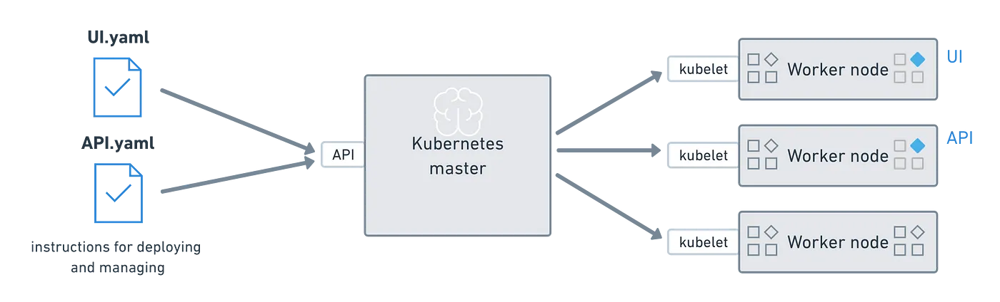
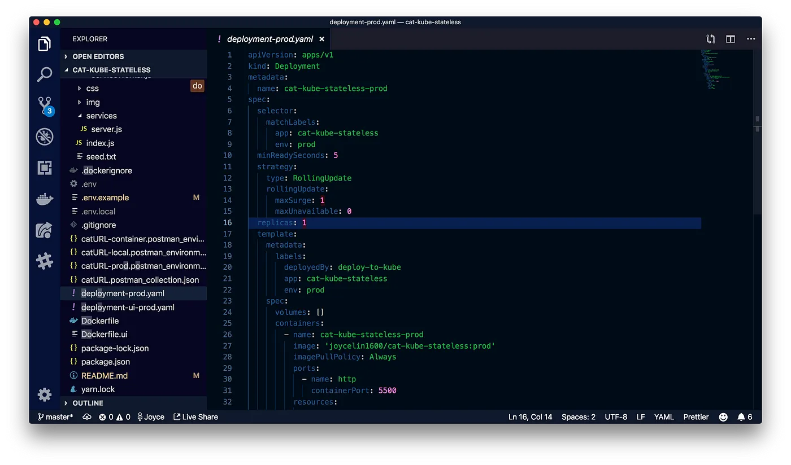
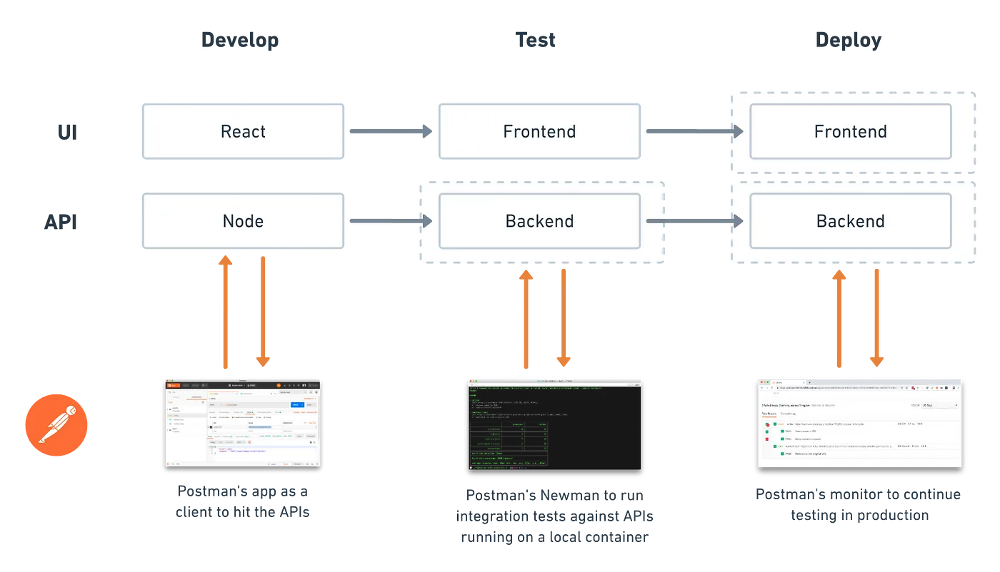

Prerequisites
- Familiarity with web development, such as Node, React, and Express
- Familiarity with command line interface
What You'll Learn
- Set up a web application using React, Express, and Node
- Test the API using Newman and Docker
- Deploy the front-end and back-end using Kubernetes
- Various options for testing and automation in Postman
What You'll Need
- NodeJS Installed
- Sign in to Postman
- Your preferred IDE, such as VSCode, installed
- A Kubernetes cluster, such as running on a local machine or in the cloud
What You'll Build
- A URL shortener application deployed using Docker and Kubernetes
As cloud applications grow in complexity, sometimes teams reorganize into a distributed microservice architecture and software delivery cycles get faster. Throughout all of this, DevOps engineers keep looking for ways to streamline and automate the continuous deployment of code.
Some teams use containers, like Docker, to simplify and automate the deployment process for their applications. This is an effective way of packaging software in a way that is predictable and consistent. You can expect the software to behave similarly whether you're on a laptop or in the cloud.
Once you get to a point where you're running multiple containers across multiple machines, spinning up more instances of your components doesn't scale linearly and dealing with this growing complexity gets a little hairy. Many teams will address this complexity by also using an orchestration engine, like Kubernetes. Teams are using Kubernetes as a higher-level abstraction to manage Docker container technology and further simplify the pipeline to enable their teams to go faster.
You don't need to have Google- or Facebook-level traffic to care about making your web applications scalable. You might have a varying number of users, need to accurately predict your infrastructure costs, or just want to manage your systems more efficiently.
To better understand software containers, let's first talk about physical shipping containers.
Knowledge check
Which of these statements is false?
Why use containers?
Before someone invented physical shipping containers, dock workers needed specialized skills to handle different types of precious cargo. Physical containers allow us to standardize how our cargo is shipped.
There's many reasons to use a container to ship something like bundles of firewood, for example.
- Portability — your container can be loaded onto any ship, transported by any shipping provider, or even transferred to a truck to travel over the road
- Modularity — containers are all the same size and dimension, so the same crane that is used at any port to handle your container of firewood can also be used to load and unload a container of loose chickens 🐔
- Security — your container is isolated from other containers, so that someone shipping fish tanks won't slosh fish water 🐟 onto your bundle of firewood
- Scalability — your firewood will only take up the space needed, so you can either occupy a small corner of one container or ramp up to reserve a bunch more containers across a fleet of ships
Similar to physical shipping containers, software containers are useful for standardization. In this case, software containers standardize IT infrastructure. Containers are a tidy way to package code with their dependencies into building blocks that can be deployed consistently and efficiently.
- Portability — a container is decoupled from the host operating system, so that it can run on anything from a laptop to your cloud of choice
- Modularity — containers give you the flexibility to create easily interchangeable application stack components, so you have a separation of concerns between components like your web server and your database
- Security — containers are immutable so updates are made by replacing the container in its entirety, making it easy to issue security patches or rollback an update quickly
- Scalability — containerized applications can scale up to handle additional load or ramp down to conserve resources during a lull
How do containers work?
Let's revisit our physical shipping containers analogy and imagine a busy seaport where ships are coming and going all day long. There's a container manifest that lists the contents and the loading sequence of everything getting stuffed into the container. The container gets stuffed according to this manifest and then loaded onto a ship. The dock workers will orchestrate the logistics, keeping a schedule of when the containers get loaded and unloaded, managing the arrival and departure of the ships, and coordinating with the freight carriers. At a busy port like this, we'd have some pretty hefty tools to coordinate and govern all of these details.
Now, back to the world of software containers.
Docker is one of the most popular, open-source container technologies that allows you to build, run, test, and deploy distributed applications. There's a lot of terminology, so let's contain our excitement, and just tackle some of the basics.
Container image
This image will inform how a container is instantiated, determining which software components will run and how. You can also create an image from a container, and share these specifications with someone else, so that an app runs the same way on a developer's laptop as it would in production.
Container
This describes a virtual environment that bundles the application code with all the binaries and libraries that are required to run an application. Since the container includes all of its dependencies, you don't have to install anything on the host operating system, keeping it separate and pristine.
Container orchestration
This refers to coordinating behaviors for containers and between containers, such as scheduling, resource management, and load balancing. In complex or dynamic ecosystems, teams will use an orchestration engine to control, manage, and automate this activity.

After the Postman engineering team reorganized into a microservice architecture, every service now uses Docker to configure their own environments. Every service owner defines their own Dockerfile from which an image is generated when new code is deployed as part of the CI/CD pipeline. The resulting image is pushed to the team's container registry, and their Beanstalk environments are configured to pull the image from the registry to run the containers.
Knowledge check
Which of these is not a benefit to using containers?
Why use Kubernetes?
With a microservice architecture, a number of services can go into making a single application, and each of these services can live in its own container. Even a simple web application might not live in a single container. You might have one container for the web frontend, one for the backend APIs, and maybe another for data storage. If you start seeing some traffic, you can spin up more instances of your app's components.
However, simply spinning up more instances doesn't scale linearly. Containers allow you to scale, but managing these operations at scale can be complicated. When you're operating at scale, you will be coordinating behavior for containers and between containers.
That's when an orchestration engine like Kubernetes comes into play. Kubernetes is an open-source, orchestration system for automating deployment, scaling, and management of containerized applications. As a higher-level abstraction to deal with container management, there's a somewhat steep learning curve to get set up, but then it makes day-to-day life easier.

Knowledge check
Which of these is not a reason to use Kubernetes?
Let's try it out! We'll start with a simple Node app that functions like a URL shortener. In our case, we'll transform one URL into a different one using cat verbs, cat adjectives, and cat emojis 🐱 — and when you input your custom URL into a browser, you'll be redirected back to the original website.
The beauty of using containers is that even if I'm developing this app on a machine with my Operating System and a different version of Node, you can rely on my container image to prescribe the exact specifications you'll need to run the same application seamlessly on your machine, or in the cloud, or wherever you choose to deploy.

If you want to follow along, go ahead and clone this example, and follow the README steps to spin up a local version of these APIs.
- Develop
- Test
- Deploy
Let's start with a Node app using React for the frontend and Express for the backend. To simplify this demonstration, we won't be implementing persistent data storage.
The backend boils down to 2 APIs.
- Transform the original URL
- Redirect the new URL back to the original URL
Even before you begin developing the frontend, you can use Postman as a client to send requests to our local server. It'll save us time every time we update our payload and inspect the server response.
This is the quintessential use case most people know about when they think of Postman. You probably knew this already. Don't worry. We'll learn a few more ways to increase our efficiency with Postman.
Start these endpoints on your local server, and then let's move over to the Postman app. Find the Postman collection called catURL in the Postman app, and then import the example collection and environment within the workspace.

We'll use the catURL collection along with the catURL-local environment to debug and test our 2 APIs. Read through the collection documentation, and try it out for yourself.
In this recipe, we won't cover the basics of how to write tests in Postman, or how to run these tests in Postman. However, you can see a few tests already written under the Tests tab of the catURL collection. Feel free to add your own tests to validate the behavior of our APIs.
Make sure to update your general Postman settings to disallow redirects so that we can inspect our server's response headers before the redirection. More on how to do that here.
Now that we've manually tested our APIs in Postman, or used the collection runner as our first step towards automation, let's use Postman's open source library Newman to run our collection at build time. We have 3 options:
- Good practice: test against your APIs running on a local server using static Postman collection and environment JSON files located within the project directory
- Better practice: still testing against your local server, run these tests using the Postman API to dynamically pull the latest versions of your collection and environment
- Even better practice: still using the Postman API, test against your APIs running on a container hosted by your local server so that your test environment exactly replicates your production environment
Let's try out the last scenario — the even better practice. Add a deployment script that builds and starts our APIs in a local container. If any Postman tests fail, Newman will return an error code to immediately terminate the remainder of the script before any deployment steps are executed.

In this example, we will be using Kubernetes to deploy our frontend and backend to separate containers. Consequently, we'll be describing our deployment steps in separate YAML files. These files will include your container image, resource allocation, the desired number of replicas, and other important information.
In this example, I only designated a single replica of our APIs. However, if I wanted to have 3 replicas, Kubernetes would keep a steady eye on my app instances and replace them if any single one crashed for some reason.

For the deployment, I used a hosted Kubernetes provider called Kubesail that creates a free managed namespace. However, the underlying deployment utility npx deploy-to-kube supports any Kubernetes cluster. By running it inside your app's directory, this utility will automatically generate a Dockerfile, build and push deployment images, generate Kubernetes configuration files, and trigger a deployment on your Kubernetes cluster.

Once our app is in production, we can continue testing our production APIs periodically to ensure they're still functioning properly.
- Good practice: on an ad hoc basis, use the Postman collection runner to run the same tests along with a Postman environment that is set up with your production configuration.
- Better practice: set up a Postman monitor to schedule your tests on a recurring frequency, or set up a custom cron job using Newman to do the same thing.

In addition to basic monitoring, the Kubernetes community has developed a bunch of open source resources for introspection. Tools like Prometheus and Istio provide more advanced features for logging and debugging for your Kubernetes clusters.
In summary, we used a local container to test our Node app, and then Kubernetes to deploy both the frontend and backend on containers in the cloud. Along the way, we used Postman to test our APIs locally, then before releasing our code, and finally once they were in production.

In case you missed it, I wanted to highlight the importance of using containers during testing. Container images make it easier to reproduce and run an application that more closely replicates the production environment.
You can use your container images to reliably run your tests against an application in a test environment, like the Postman engineering team does. Containers also allow you to scale up more instances for concurrent performance testing. And in the event you've released a bug into production, containers make it really easy to quickly roll back an update to a previous version of the application.
There's a bunch of ways that you can use containers in your development, testing, and deployment processes. The strategy you choose will be determined by your team's current infrastructure, talent, and goals.
What we've covered
- Set up a web application using React, Express, and Node
- Test the API using Newman and Docker
- Deploy the front-end and back-end using Kubernetes
Additional resources
- Running collections video
- Acing your API tests — what you need to know for test automation blog
- 15 days of Postman - for testers badge
- Other hands-on tutorials